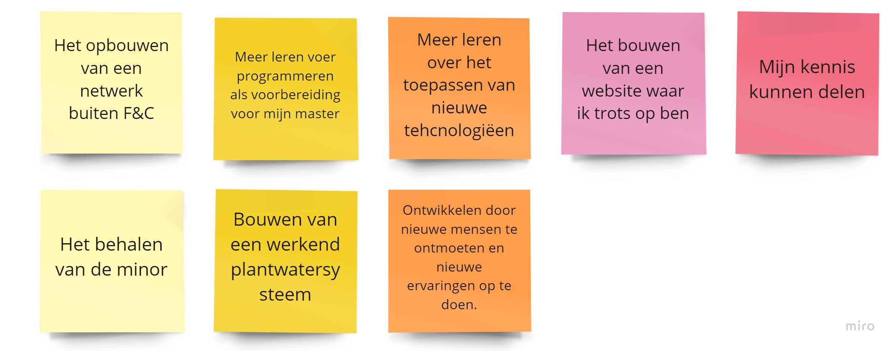

Om mijn persoonlijke ontwikkeling goed kenbaar te maken, heb ik een BMC over mezelf opgesteld. Ook heb ik een SWOT analyse gemaakt over mezelf.
Daarnaast heb ik een Disc profiel van mezelf teruggekregen nadat ik hier een test over had gedaan.
Ook heb ik een diepteinterview gedaan met Fransic, die mij na het interview een analyse stuurde naar aanleiding van de antwoorden die ik had gegeven.
Die zijn in het BSR plaatje te vinden.

Ik vond het erg grappig om deze BSR score terug te lezen, ik herken mezelf namelijk zowel in de uitkomsten van deze BSR test en in de uitkomsten uit de DISC test.
Dit is best gek, aangezien ze beide een ander uitgangspunt hebben t.o.v. mijn carriére.
Daarnaast vind ik het belangrijk om doelen op te stellen. De doelen die ik voor deze minor heb opgesteld zijn hieronder te vinden. Ik hoop deze doelen te behalen door de opdrachten, het project en het overbrengen van kennis met met mijn klasgenoten.
Joep, Marc, Eline en ik zitten vaak samen om onze voortgang te bespreken en elkaar te helpen waar nodig is. Ook mijn trello bord helpt met het behalen van deze doelen.

.jpg)